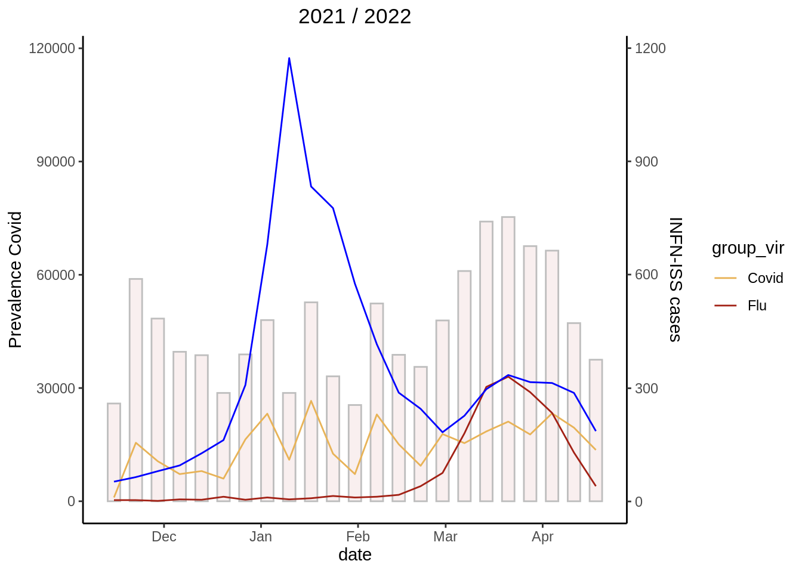

Part 2 Welcome here
par(mar = c(4, 4, 0.1, 0.1)) plot(c(0,1,2,3), c(0,1,2,3), pch = 19, type = “b”)
## Installing packages into '/home/runner/work/_temp/Library'
## (as 'lib' is unspecified)##
## Attaching package: 'dplyr'## The following objects are masked from 'package:stats':
##
## filter, lag## The following objects are masked from 'package:base':
##
## intersect, setdiff, setequal, union##
## Attaching package: 'reshape'## The following object is masked from 'package:dplyr':
##
## rename## `summarise()` has grouped output by 'Settimana'. You can override using the
## `.groups` argument.